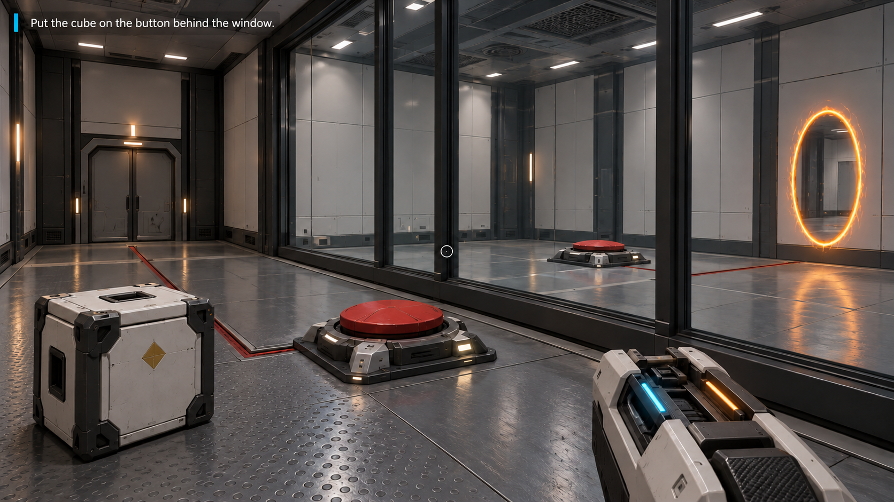
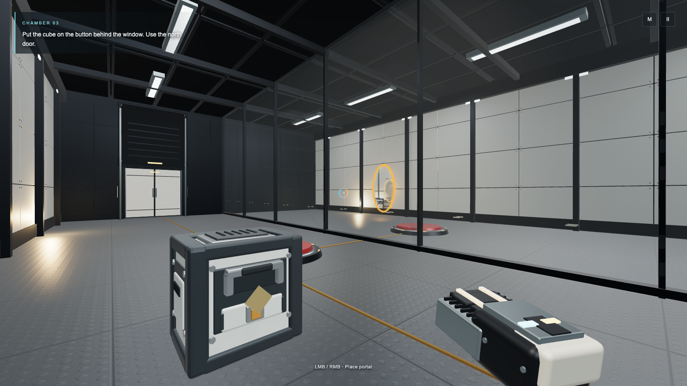

Room03 · Behind the Window
Generated design reference alongside actual frozen public-game art inspection. The two views share the enclosed parallel bays, window, two buttons, diamond module and linked portal composition. They are not identical camera frames. Read review and limits.

Generated target · richer wear/reflections · not gameplay.
Actual game · main-CuBWdJum.js · normal movement/aim/shots · inspection only. NORTH/SOUTH signs were occluded in this freeze; source correction awaits capture.The independent route proof and earned core save are separate QA evidence. This page does not claim fifty completed levels, all-angle cube seam verification or target rendering parity.